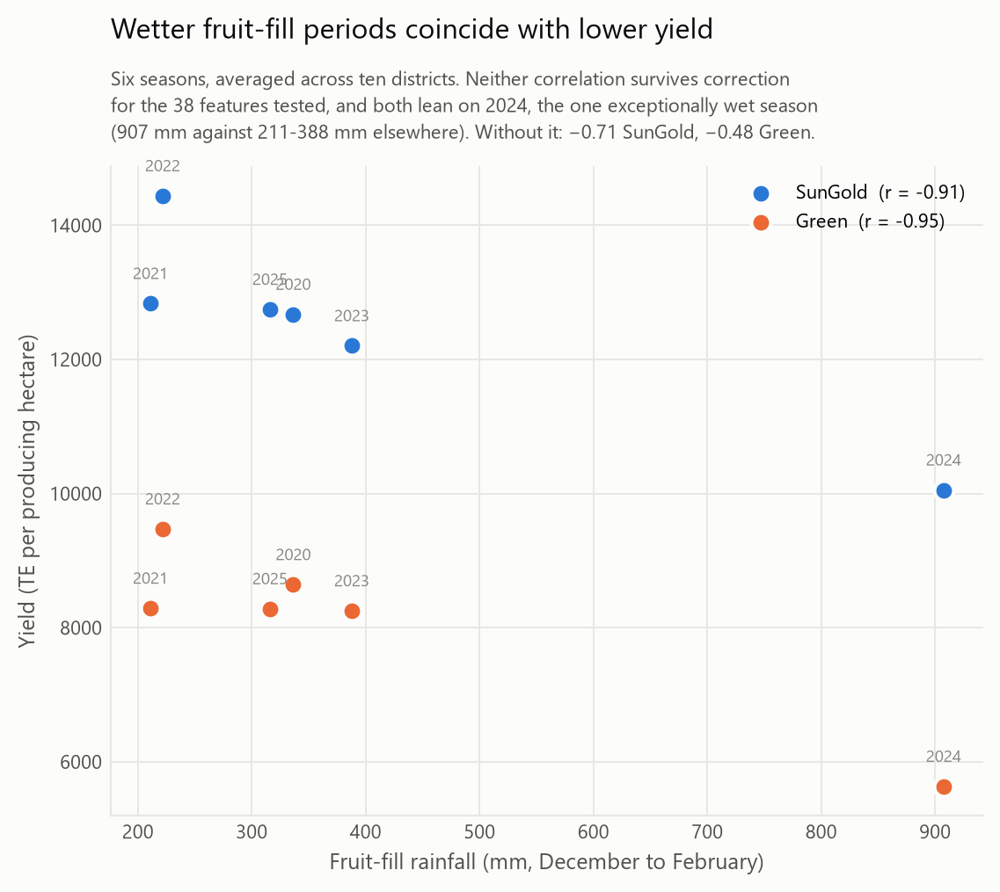

NZ Growing-Season Climate & Kiwifruit Yield
Aug 2026Does growing-season weather track kiwifruit yield? Getting to an answer meant building the dataset first: five sources, including annual report PDFs whose table layouts change between editions, and reconciling two publishers against each other. That reconciliation surfaced a defect in an official published source, where three seasons of yield figures had been printed in the hectares row. The check that catches it is a validation rule, so a repeat is caught without a code change.
Every feature's variance is split between seasons, districts and residual before anything is fitted, and that table decides what may be asked. Winter chill is absent from the results because 69 to 83 percent of its variance sits between districts, so it cannot be separated from everything else that differs between districts. The code refuses to test it rather than printing a number someone would read as an association.
One association holds: wetter fruit-fill periods go with lower yield, r of -0.91 and -0.95, still substantial after dropping the most influential season. It does not survive correction for the 38 features tested, and the write-up says so. A pre-committed hypothesis came out backwards, and that is reported too. 122 tests, and the pipeline runs top to bottom from a clean checkout.
